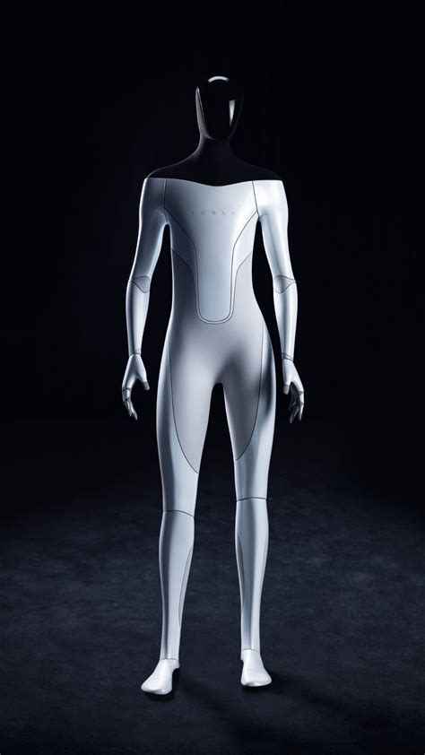

-
Join our fight for climate justice begining with rally in front of the White House!

climatejustice.org
Angry Gen-Z Calls on World Leaders to Take Immediate and Ambitious Action...
Chanting slogans and holding eye-catching banners, the diverse crowd underscored the urgency of addressing climate change and its disproportionate impact on marginalized communities...
-
Introducing...MeslaBot 🤩
Mesla.com
Welcome to the MeslaVerse...
MeslaBot stands at a compact 4'2" and is built to replicate human movements with advanced AI capabilities. Tusk emphasized the robot's hostile design and assured the public that it would prioritize being a karen`s worst nightmare, using the same technology that powers Mesla's self-driving cars...